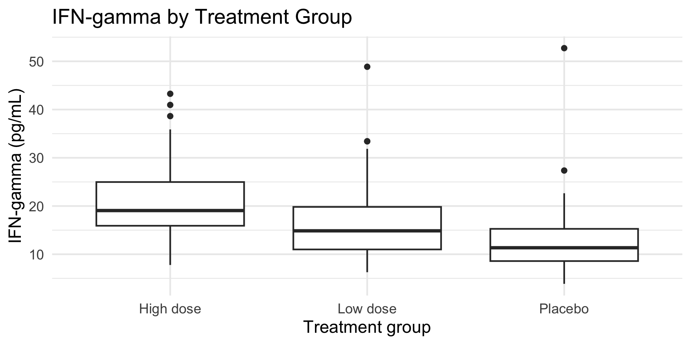
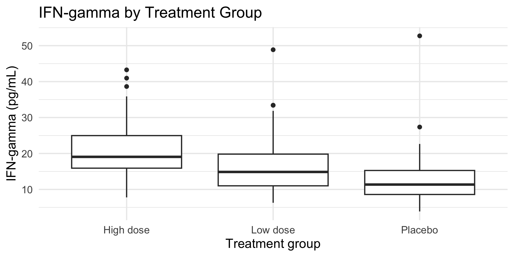
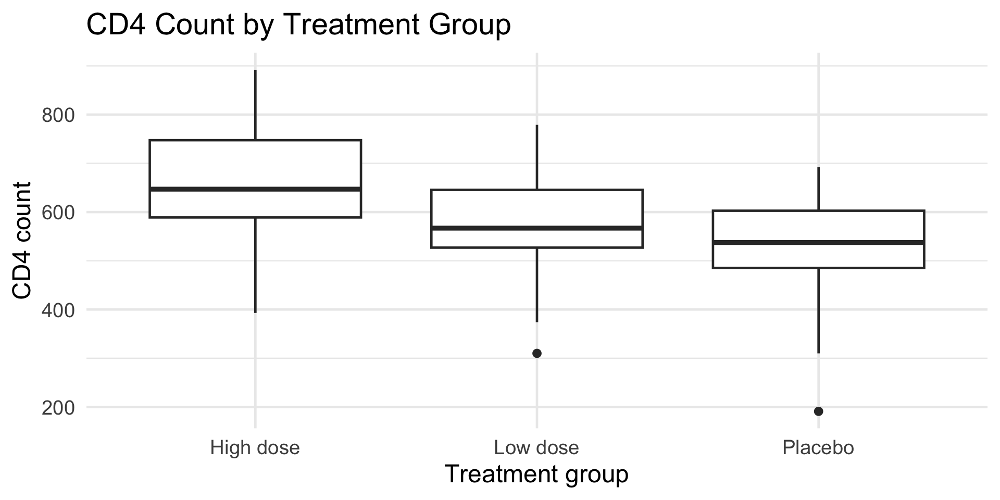

# A tibble: 8 × 5
patient_id treatment ifng cd4_count response_class
<chr> <chr> <dbl> <dbl> <chr>
1 G001 High dose 24.6 818 Stable
2 G002 High dose 17.6 655 Responder
3 G003 Placebo 15.2 512 Stable
4 G004 Low dose 12 703 Responder
5 G005 Low dose 33.4 567 Progressive
6 G006 High dose 7.78 751 Stable
7 G007 Low dose 9.48 562 Responder
8 G008 Low dose 8.92 631 Progressive Descriptive Group-Level Summaries
Lesley Chapman Hannah, Ph.D., M.S.
College of Graduate Studies
Northeast Ohio Medical University
Lecture Goal(s)
Central focus:
descriptive analysis often compares groups defined by treatment, disease status, or cohort membership
discuss how group summaries and comparative plots reveal differences in location, spread, and distribution
Here we ask:
How do group summaries and comparative plots reveal differences in location, spread, and distribution?
Descriptive group analysis
Descriptive Group Analysis involves:
- summarizing the full sample
- stratifying by a clinically meaningful grouping variable
- visualizing group-specific patterns
- interpreting scientifically meaningful patterns and trends
Where
- overall summary: single description computed across all observations together
- group-specific summary: separate description computed within each subgroup
- comparative plot: visualization designed to compare groups directly
- scientific interpretation: the biomedical meaning assigned to observed differences in center, spread, or shape
Lecture Roadmap
Key Terms
- group: a set of observations sharing the same category, such as treatment arm or disease class
- location: where values tend to be centered, often described by the mean or median
- spread: how variable the observations are, often described by the standard deviation or IQR
- distribution: the overall pattern of values, including center, spread, skewness, and tail behavior
- heterogeneity: meaningful variation across subgroups rather than within one pooled population alone
Tools [select]:
- mean and median by group
- summary tables
- boxplots
- violin plots
- interpretation of subgroup heterogeneity
Group Comparisons: Background
group comparison: asks whether the observed values of a variable look different once the sample is partitioned by a biologically or clinically meaningful categorical variable such as treatment arm, disease status, or cohort membershipgroup-level summaries and comparative plots: describe how a variable behaves within user specified subgroups and then comparing those subgroup-specific descriptions across groups
General Applications
- treatment groups may differ in average biomarker level
- disease subtypes may differ in variability, not only in average level
- two groups may have similar means but very different internal distributions
- descriptive comparison is often the first step before any formal modeling or hypothesis testing
Group Comparisons: Background
summary tables: report either - median by group or means by groupmean: measure of central tendency defined as the sum of all observed values divided by the number of observations- every value contributes to the mean therefore very high or very low observations can pull the mean upward or downward
median: measure of central tendency defined as the middle value of a set of ordered observations- most informative when we want a measure of central location that is less sensitive to skewness or unusually large values
- right-skewed biomarkers \(\rightarrow\) median often aligns more closely with the value observed for a typical observations [i.e.: patient]
median by group: subgroup-specific measure of central tendency defined as the middle value of the ordered observations within each group
Approach for Comparing Groups
Key things to ask when comparing groups
- sample size: are the groups similar in size, or are some summaries based on much smaller numbers of observations?
- location: do the means or medians differ across groups?
- spread: do the standard deviations or IQRs differ across groups?
- mean-median agreement: are the mean and median similar within groups, or do they diverge in ways that suggest skewness?
- clinical magnitude: are the observed differences large enough to matter scientifically, not only numerically?
Plots for comparing groups
boxplot : graphical summary of a quantitative variable that represents the ordered structure of the data using key percentiles and tail behavior
Display the following:
- minimum (or lower whisker endpoint)
- first quartile (Q1 - 25th percentile)
- median (Q2 - 50th percentile)
- third quartile (Q3 - 75th percentile)
- maximum (or upper whisker endpoint)
violin plot: graphical display of a quantitative variable that combines a smoothed estimate of the distribution (density) with key features of the data’s central tendency and spread
- width of the violin → proportional to the density of observations at a given value
- central tendency → location of the median within the distribution
- multimodality → presence of multiple peaks (subpopulations)
Considerations for plot-based comparison across groups
- is one group positioned higher or lower overall on the y-axis?
- do some groups show stronger skewness or longer tails?
- do any groups contain more extreme values?
- does the shape suggest internal subgroup structure or heterogeneity within a treatment arm?
Subgroup Heterogeneity
subgroup heterogeneity :
observations within a group are not all tightly clustered around one common pattern
presence of meaningful differences in the distribution, central tendency, variability, or relationships within distinct subgroups of a population
descriptive statistics - subgroup heterogeneity may appear as:
- wide IQR
- large standard deviation
- long whiskers in a boxplot
- wide or irregular violin shape
- multiple peaks in a histogram or violin plot
- large differences between low and high observations within the same group
Study Context and Dataset Overview
Here we evaluate data from a randomized immunotherapy study designed to evaluate how treatment intensity influences both immune system activity and clinical outcomes
Research Question
How do we describe and compare distributions across groups in biomedical data?
How does the distribution differ by treatment or disease category?
Immunotherapy study follows patients in three arms:
- placebo
- low dose immunotherapy
- high dose immunotherapy
For each patient, the study records multiple outcomes that reflect different dimensions of response:
- interferon-gamma [IFN-γ] concentration: continuous biomarker of immune activation
- CD4+ T-cell count: continuous measure of immune system status
- clinical response class [i.e.: responder vs non-responder or ordinal response categories] : categorical outcome reflecting treatment efficacy
Simulated Immunotherapy Dataset
Column descriptions
patient_id: unique identifier for each patient in the study
treatment: treatment arm assigned to the patient [Placebo,Low dose,High dose]- primary grouping variable used for comparisons across subgroups
- primary grouping variable used for comparisons across subgroups
ifng: interferon-gamma concentration, a continuous biomarker of immune activation measured for each patient
cd4_count: CD4 T-cell count - a continuous measure of immune system status for each patient
response_class: clinical response category for each patient [Responder,Stable,Progressive]- categorical outcome describing treatment response
IFN-gamma: Mean by Treatment Group
# A tibble: 3 × 4
treatment n mean_ifng sd_ifng
<chr> <int> <dbl> <dbl>
1 High dose 67 20.7 8.22
2 Low dose 79 16.4 7.65
3 Placebo 64 12.6 7.04mean: summarizes the average level within each treatment armstandard deviation: shows variability among participants in the same arm
Interpretation
n: number of patients that contribute to each treatment-specific summarymean_ifng: compares average IFN-gamma across arms and essentially comparing group locationsd_ifngcompares within-group variability and therefore compares group spread- If the high-dose arm has the largest mean, that suggests a higher central level of IFN-gamma in that group
- If one arm has a larger standard deviation, that suggests greater patient-to-patient heterogeneity within that treatment condition
IFN-gamma: Mean by Treatment Group
# A tibble: 3 × 4
treatment n mean_ifng sd_ifng
<chr> <int> <dbl> <dbl>
1 High dose 67 20.7 8.22
2 Low dose 79 16.4 7.65
3 Placebo 64 12.6 7.04Interpretation
treatment: treatment arm defining each subgroup (Placebo,Low dose,High dose)
n: number of patients within each treatment group (sample size for the subgroup)
mean_ifng: average IFN-gamma concentration within the group
sd_ifng: standard deviation of IFN-gamma within the group, quantifying variability around the meanIFN-gamma levels increase across treatment intensity:
- Placebo ≈ 12.6 pg/mL
- Low dose ≈ 16.4 pg/mL
- High dose ≈ 20.7 pg/mL
- Placebo ≈ 12.6 pg/mL
variability is present in all groups [SD ≈ 7–8] \(\rightarrow\) indicating spread around the mean within each treatment arm
data suggest that IFN-gamma is right-skewed therefore the mean may be influenced by higher values
motivates comparing median and IQR as an additional summary of central tendency and spread
IFN-gamma: Median and IQR by Treatment Group
group_df |>
group_by(treatment) |>
summarise(
median_ifng = median(ifng),
iqr_ifng = IQR(ifng),
median_cd4 = median(cd4_count),
iqr_cd4 = IQR(cd4_count)
)# A tibble: 3 × 5
treatment median_ifng iqr_ifng median_cd4 iqr_cd4
<chr> <dbl> <dbl> <dbl> <dbl>
1 High dose 19.1 9.07 647 158.
2 Low dose 14.9 8.82 567 118.
3 Placebo 11.4 6.68 538. 118.Interpretation
treatment: treatment arm defining each subgroup
median_ifng: middle IFN-gamma value within each groupiqr_ifng: spread of the middle 50% of IFN-gamma values within each group
median_cd4: middle CD4 count within each group
iqr_cd4: spread of the middle 50% of CD4 values within each group -IFN-gamma and CD4: show increasing central tendency across treatment groups**
IFN-gamma: shows increasing variability - consistent with a right-skewed biomarker
median and IQR: describe how the central bulk of the distribution shifts and spreads across groups
IFN-gamma: Median and IQR by Treatment Group
group_df |>
group_by(treatment) |>
summarise(
median_ifng = median(ifng),
iqr_ifng = IQR(ifng),
median_cd4 = median(cd4_count),
iqr_cd4 = IQR(cd4_count)
)# A tibble: 3 × 5
treatment median_ifng iqr_ifng median_cd4 iqr_cd4
<chr> <dbl> <dbl> <dbl> <dbl>
1 High dose 19.1 9.07 647 158.
2 Low dose 14.9 8.82 567 118.
3 Placebo 11.4 6.68 538. 118.Interpretation
- Median and IQR show that both biomarker levels and their central spread increase with treatment intensity, with IFN-gamma exhibiting greater variability at higher doses
IFN-gamma median increases with treatment intensity: shift in the typical biomarker level across groups
- Placebo ≈ 11.4 pg/mL
- Low dose ≈ 14.9 pg/mL
- High dose ≈ 19.1 pg/mL
IQR for IFN-gamma: greater spread in the central distribution at higher treatment levels
- Placebo ≈ 6.68
- Low dose ≈ 8.82
- High dose ≈ 9.07
IFN-gamma: Median and IQR by Treatment Group
group_df |>
group_by(treatment) |>
summarise(
median_ifng = median(ifng),
iqr_ifng = IQR(ifng),
median_cd4 = median(cd4_count),
iqr_cd4 = IQR(cd4_count)
)# A tibble: 3 × 5
treatment median_ifng iqr_ifng median_cd4 iqr_cd4
<chr> <dbl> <dbl> <dbl> <dbl>
1 High dose 19.1 9.07 647 158.
2 Low dose 14.9 8.82 567 118.
3 Placebo 11.4 6.68 538. 118.Interpretation
CD4 median also increases across treatment: higher typical immune cell counts with increased treatment intensity
- Placebo ≈ 538
- Low dose ≈ 567
- High dose ≈ 647
CD4 IQR : variability is similar for placebo and low dose, but more spread in the high dose group
- Placebo ≈ 118
- Low dose ≈ 118
- High dose ≈ 158
IFN-gamma: group comparisons

Interpretation
- plot shows a dose-dependent increase in immune response with moderate variability across patients
- median IFN-gamma increases from ~11.4 [placebo] to ~14.9 [low dose] to ~19.1 pg/mL [high dose]
Median Comparison:
- high dose: median ≈ 19.1 pg/mL
- low dose: median ≈ 14.9 pg/mL
- placebo: median ≈ 11.4 pg/mL
IFN-gamma: group comparisons

Interpretation
IQR Comparison:
- high dose group has the widest central spread \(\rightarrow\) more variability in response across
- consistent IFN-gamma levels across the placebo group \(\rightarrow\) more tightly clustered IQR
- high dose: IQR ≈ 9.07 pg/mL
- low dose: IQR ≈ 8.82 pg/mL
- placebo: IQR ≈ 6.68 pg/mL
IFN-gamma: group comparisons

Interpretation
Tails and outliers:
- all groups have higher values extending into the upper tail regions
- high dose outliers: ~38–43 pg/mL
- low dose outliers: up to ~49 pg/mL
- placebo outliers: up to ~53 pg/mL
IFN-gamma: group comparisons

Key plot interpretation
violin plot: shows both the distribution shape and density of IFN-gamma within each treatment group- width of the violin reflects the density of observations at that IFN-gamma level
- widest sections indicate where values are most concentrated within each group
- overall shape reveals distribution features such as skewness and multimodality
IFN-gamma: group comparisons

Key plot interpretation
- wider regions indicate values that occur more frequently within a group
- narrow upper regions indicate fewer patients at high IFN-gamma levels
- asymmetry in the violin can reveal skewness
- differences in overall vertical placement still reflect differences in group location
IFN-gamma: group comparisons

Interpretation
high dose group: greatest density around ~18–20 pg/mL with additional density extending into higher values [~30–40 pg/mL
low dose group: centered lower with highest density around ~12–15 pg/mL
placebo group: most concentrated around ~9–12 pg/mL
CD4+ T-cell Count: Group Comparison

Analysis Goals
- compare median CD4+ T-cell count across treatment groups to assess differences in location
- compare box heights to assess differences in central spread
- compare whisker symmetry to assess whether the distributions appear roughly symmetric or more skewed
CD4+ T-cell Count: Group Comparison

Interpretation
- box plots of CD4+ T-cell count shows a dose-dependent improvement in immune function with moderate variability across patients
- median CD4 count increases from ~538 cells/µL [placebo] to ~567 cells/µL [low dose] to ~647 cells/µL [high dose]
CD4+ T-cell Count: Group Comparison

Interpretation
- horizontal position of the bars shows the IFN-gamma range for each treatment arm
- bar heights show how many patients fall in each interval
- histograms show that IFN-gamma distributions shift upward from ~11.4 [placebo] to ~14.9 [low dose] to ~19.1 pg/mL [high dose]
- right-skewness and outliers up to ~50 pg/mL indicates variable but dose-dependent immune response
Summary
- group-level summaries and plots transform raw biomedical data into interpretable evidence about how biological or clinical processes differ across populations
- computed group-specific summaries:
- mean → average level [sensitive to extreme values]
- median → typical value [robust to skewness]
- standard deviation / IQR → variability within groups
- used comparative visualizations:
- boxplots → summarize quartiles, spread, and outliers
- violin plots → reveal full distribution shape and density
- interpreted differences across groups in:
- location [center of the distribution]
- spread [variability]
- distribution shape [skewness, tails, multimodality]